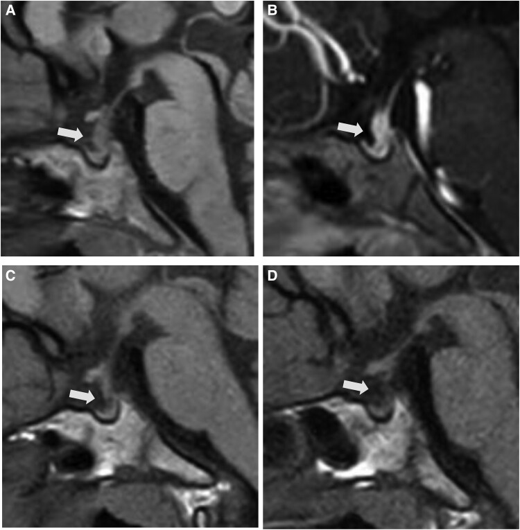
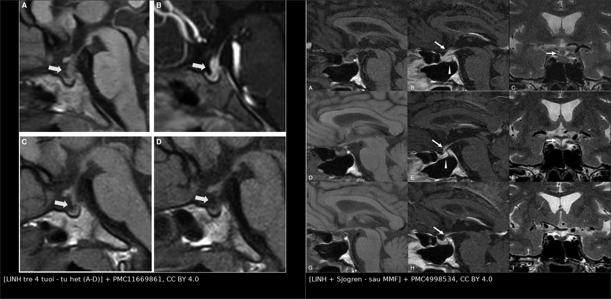
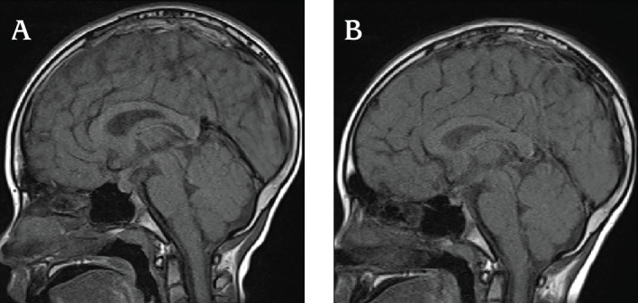
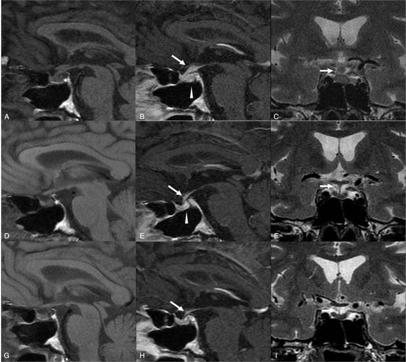

1753 — Viêm tuyến yên–cuống yên tăng sinh lympho ở trẻ / Lymphocytic infundibuloneurohypophysitis (LINH)
Tags: pattern:cuong-yen-day pattern:mat-diem-sang-T1 pattern:ngam-thuoc pattern:tu-thoai vung:tuyen-yen vung:so-yen vung:nao protocol:MRI-tuyen-yen protocol:sinh-thiet protocol:theo-doi incidentaloma:khong
Mức chắc chắn (certainty): tổng hợp y văn (literature synthesis) — 3 báo cáo ca có ảnh (JCEM Case Rep 2025, PMC11669861; J Clin Res Pediatr Endocrinol 2025, PMC12372633; Medicine 2016, PMC4998534), 2 đoàn hệ cuống yên dày ở trẻ (Arch Endocrinol Metab 2024, PMC11460958; Cancers 2023, PMC10417368), 1 tổng quan về nguyên nhân và chỉ định sinh thiết (Pediatr Endocrinol Diabetes Metab 2022, PMC10214961) và 1 đoàn hệ IgG4 viêm tuyến yên có mô bệnh (Acta Neurochir 2022, PMC9338115). Không có ca nguyên văn do nhóm tự viết; mọi ca trong quiz là ca có ảnh từ bài gốc, ghi rõ PMCID.
Câu chốt: trẻ đái nhiều – uống nhiều, MRI có cuống yên dày nhẵn, mất điểm sáng T1 thùy sau — ba khả năng chính là u mầm, LCH, LINH. LINH là chẩn đoán loại trừ + theo dõi, và kháng thể anti-rabphilin-3A giúp bỏ sinh thiết ở một phần ca. Nhưng kháng thể không phải chứng minh: nó dương giả ở u mầm và có thể dương ở người khỏe, trong khi âm tính vẫn không loại LINH (độ nhạy chỉ 76–88,9% khi chẩn đoán lâm sàng). Sai lầm chết người theo hai chiều: (a) sinh thiết cuống yên ngay khi chỉ cần theo dõi, (b) gọi "LINH" rồi ngừng theo dõi trong khi đó là u mầm đang lớn dần — đã có ca "LINH" có mô bệnh rồi vẫn lộ ra u mầm khi cuống yên to thêm và marker tăng.
1. Tổng quan bệnh học – cơ chế hình ảnh
1.1 Bệnh học và dịch tễ
- LINH là viêm tăng sinh lympho–tương bào khu trú ở cuống yên (infundibulum) và thùy sau tuyến yên, dẫn tới thiếu arginine vasopressin (AVP) — tức đái tháo nhạt trung ương (central diabetes insipidus, CDI). Thể lan sang tuyến yên trước gọi là viêm tuyến yên tăng sinh lympho (lymphocytic panhypophysitis, LPH).
- Cơ chế tự miễn: kháng thể anti-rabphilin-3A nhắm vào rabphilin-3A — protein hiệu ứng của Rab3 trên túi bài tiết thần kinh, cần cho việc giải phóng AVP. Kháng thể làm hỏng khâu giải phóng túi → đái nhiều dù tuyến yên sau còn tế bào. Đây là lý do kháng thể này vừa là marker, vừa là bằng chứng cơ chế (PMC11669861).
- Dịch tễ: tuổi khởi phát trung bình ở người lớn 42 tuổi; ca nhi rất hiếm. Tính đến 2025, y văn nhi chỉ có vài ca: 7 tuổi (Morota, J Pediatr Endocrinol Metab 2022), 10 tuổi (phát hiện kháng thể 9 năm sau khởi phát — Kume, Clin Pediatr Endocrinol 2021), 12 và 13 tuổi (Murai, 2022), 8 tuổi (PMC12372633) và 4 tuổi 3 tháng — ca nhỏ nhất có kháng thể dương (PMC11669861).
- Liên quan bệnh tự miễn khác: viêm tuyến giáp mạn (Hashimoto), suy thượng thận tự miễn, lupus, hội chứng Sjögren — ca người lớn trong PMC4998534 là LINH + Sjögren nguyên phát, điều trị mycophenolate mofetil (MMF) không corticoid.
1.2 TẠI SAO hình ảnh lại như vậy
- Mất điểm sáng T1 thùy sau (posterior pituitary bright spot, PPBS): thùy sau chứa hạt bài tiết AVP/oxytocin gắn neurophysin; phức hợp protein–phospholipid này có thời gian T1 ngắn nên sáng tự nhiên trên T1 không tiêm. Lympho xâm nhập phá hủy hạt → mất điểm sáng, và mất luôn khả năng cô đặc nước. Vì vậy mất PPBS xuất hiện sớm, trước khi có khối lớn.
- Cuống yên dày: thâm nhiễm lympho + phù nề dọc trục dưới đồi–tuyến yên. Vùng median eminence–thùy sau không có hàng rào máu–não, nên ngấm thuốc ở cuống yên là sinh lý; cái bệnh lý là độ dày và tính chất ngấm (ngấm mạnh, đồng nhất, kéo dài hơn cuống bình thường).
- Vì sao "nhẵn, đối xứng, không có nhân rời": viêm lan tỏa theo trục giải phẫu, không tạo khối đẩy mô như u. Ngược lại u mầm/LCH thường không đều, lệch bên, có nốt tách rời hoặc xâm lấn sàn não thất III. Tuy vậy hình ảnh đơn thuần không phân biệt được — đây là điểm quan trọng nhất của bài.
- Vì sao LINH tự thu nhỏ: viêm tự giới hạn, phù nề rút dần và mô xơ thay thế; trên MRI thấy cuống yên mỏng dần về bình thường trong 4–9 tháng (PMC11669861: hết dày sau 4–5 tháng; PMC12372633: thu nhỏ sau 9 tháng; PMC4998534: hết sau 9 tháng MMF). Nhưng ĐTĐ nhạt thường tồn tại vì tế bào bài tiết đã mất — hình ảnh hồi phục không có nghĩa là ngừng desmopressin.
- Vì sao chẩn đoán muộn: đái nhiều – uống nhiều âm thầm, trẻ vẫn chơi bình thường; MRI đầu có thể chỉ dày 3–4 mm, dễ đọc là "giới hạn bình thường". Trong u mầm trên yên, trung vị 312 ngày từ MRI đầu đến điều trị (PMC11246258, dẫn ở bài 1731) — con số cho thấy giá của việc "theo dõi mà không có mốc".
1.3 Ngưỡng định lượng trụ cột
| Đại lượng | Con số | Nguồn |
|---|---|---|
| Định nghĩa cuống yên dày ở trẻ | ≥ 3 mm tại chỗ bám tuyến yên và/hoặc ≥ 4 mm tại giao thoa thị giác | PMC11460958 |
| Ngưỡng sinh thiết theo đồng thuận Anh 2021 | đường kính tổn thương cuống yên ≥ 6,5–7 mm | PMC10214961 |
| Nguyên nhân cuống yên dày ở trẻ | u mầm, LCH, LINH là 3 nguyên nhân hàng đầu; sarcôid/Lao/u hạt hiếm (ca lẻ) | PMC10214961 |
| Đoàn hệ Chile 2020–2022 (n = 9, tuổi TB 10,36, 2,4–17) | 8/9 u mầm, 1/9 LCH, 0 LINH; 100% đái nhiều – uống nhiều, 77,8% thấp lùn; 4/9 phải sinh thiết lần 2 | PMC11460958 |
| Đoàn hệ Hồng Kông (n = 28) | 50% (14/28) do tân sinh: u mầm 46%, LCH 4%; cuống yên ≥ 6,5 mm + CDI + ≥ 2 thiếu hụt hormone dự báo tân sinh | PMC10417368 |
| Độ nhạy anti-rabphilin-3A | 100% ở LINH có mô bệnh; 76% ở LINH chẩn đoán lâm sàng (báo cáo đầu); gộp lại: 100% LINH, 80% LPH có AVP-D, 88,9% LINH + LPH | PMC11669861 |
| Dương giả / nhiễu của anti-rabphilin-3A | 1 ca u mầm có mô bệnh vẫn dương kháng thể (2022); 5/41 (12%) mẫu người khỏe dương ở một nghiên cứu; độ nhạy 11,1% ở viêm tuyến yên trước đơn thuần | PMC11669861 · PMC12372633 |
| Diễn tiến cuống yên | Hết dày sau 4–5 tháng (ca 4 tuổi); thu nhỏ sau 9 tháng (ca 8 tuổi); hết sau 9 tháng MMF (ca Sjögren) | PMC11669861 · PMC12372633 · PMC4998534 |
| IgG4 viêm tuyến yên (n = 8, tuổi trung vị 51) | Sau mổ: khối giảm 7/7 (100%), cuống yên còn dày 5/7 (71,4%), suy tuyến yên trước 4/8 (50%), panhypopituitarism + ĐTĐ nhạt 3/8 (37,5%) | PMC9338115 |
2. Mẫu hình + chẩn đoán phân biệt theo vị trí (Gamut)
- Cuống yên dày đơn độc, không khối rời:
- LINH/LPH · u mầm · LCH · IgG4 viêm tuyến yên · bệnh Erdheim–Chester (ECD) · sarcôid · lao · di căn/leukemia/lympho.
- Gợi nhớ LIGER: LCH · Infundibuloneurohypophysitis · Germinoma · Erdheim–Chester · Rải (di căn/leukemia). Thêm IgG4 và Sarcôid khi có bệnh cảnh gợi ý.
- Cuống yên dày + mất điểm sáng T1 thùy sau (đái tháo nhạt):
- LINH · u mầm · LCH · sau chấn thương/phẫu thuật/xạ · tuyến yên lạc chỗ bẩm sinh (thể bẩm sinh có cuống yên đứt, không dày liên tục).
- Cuống yên dày + khối tuyến yên trước (suy nhiều trục):
- LPH (thể lan tỏa) · IgG4 viêm tuyến yên · u tuyến yên (hiếm ở trẻ) · LCH · lympho · di căn.
- Theo tuổi: trẻ 10–19 tuổi + cuống yên dày → ưu tiên u mầm; trẻ < 6 tuổi + tổn thương xương/da → ưu tiên LCH; trẻ có bệnh tự miễn khác (Hashimoto, Sjögren, lupus) → nghĩ LINH/LPH.
- Theo hình thái cuống yên: nhẵn, đối xứng, dày đều = viêm (LINH) hoặc LCH sớm; gồ ghề, lệch, nốt rời, xâm lấn sàn não thất = u (u mầm/di căn); dày + phì đại cuống thị = u thần kinh đệm đường thị/NF1.

Bé trai 4 tuổi 3 tháng, đái nhiều – uống nhiều: (A) T1W 1 tháng sau khởi phát — mất điểm sáng thùy sau và cuống yên dày (mũi tên); (B) sau tiêm 2 tháng — cuống yên dày thêm nhẹ; (C) 4 tháng — hết dày; (D) 5 tuổi — cuống yên bình thường. Ảnh nguyên bản, không crop (JCEM Case Rep 2025, PMC11669861, CC BY 4.0).3. Bảng so sánh phân biệt (ma trận đối chiếu)
| Thực thể (entity) | Hình ảnh điển hình | Chốt vào (rule-in) | Chốt loại (rule-out) | Gợi ý xác nhận |
|---|---|---|---|---|
| LINH (bài này) | Cuống yên dày nhẵn, đối xứng, mất PPBS, ngấm mạnh đồng nhất, không khối rời; tự mỏng dần 4–9 tháng | CDI + cuống yên dày nhẵn + anti-rabphilin-3A dương + tự cải thiện | Tổn thương xương/da, cuống yên to dần, marker tăng → không phải LINH | Kháng thể + MRI lặp 3–6 tháng; sinh thiết chỉ khi tiến triển |
| U mầm trên yên (germinoma) | Khối đồng nhất, ngấm mạnh, ADC thấp, có thể hai ổ tùng + trên yên; cuống yên gồ ghề/lệch | AFP > 25 ng/mL và/hoặc hCG > 50 IU/L; CSF-PLAP ≥ 8 pg/mL; trẻ 10–19 tuổi | Marker âm không loại (thể marker âm); cần sinh thiết/theo dõi | Marker máu + DNT, MRI toàn trục tủy (bài 1731) |
| LCH trục dưới đồi–tuyến yên | Cuống yên ≥ 3 mm, mất PPBS, khối dưới đồi; tổn thương xương "punched-out", ban da, nang phổi | Tổn thương ngoài sọ + CD1a/Langerin dương | Chỉ cuống yên đơn độc, không tổn thương ngoài sọ → chưa loại được | Sinh thiết tổn thương ngoài sọ; BRAF V600E (bài 1751) |
| IgG4 viêm tuyến yên | Cuống yên dày + khối tuyến yên, ngấm đồng nhất; cuống yên còn dày sau mổ 71,4% | IgG4 huyết thanh cao, tổn thương tụy/tuyến nước bọt/hạch/thận, mô bệnh IgG4+/IgG > 40% | Không có tổn thương ngoài tuyến yên + kháng thể LINH dương → nghĩ LINH | IgG4 máu, sinh thiết; hay tái phát, cần theo dõi dài |
| Erdheim–Chester (ECD) | Cuống yên dày + mô mỡ quanh hốc mắt, xơ hóa sau phúc mạc, xương cứng | Đau xương hai bên + "hairy kidney" + BRAF V600E | Chỉ tổn thương sọ, không xơ hóa tạng → LCH | Sinh thiết: CD1a âm, CD68+/CD163+ |
| Sarcôid/Lao vùng dưới đồi | Cuống yên dày, ngấm màng não, tổn thương phổi/hạch rốn phổi | ACE tăng, tổn thương phổi/hạch, lao IGRA dương | Phổi sạch + không tổn thương ngoài sọ → ít nghĩ | CT ngực, IGRA, sinh thiết |
| Lympho/di căn/leukemia | Cuống yên dày + nhiều ổ, tổn thương tủy xương, hạch | Bệnh máu đã biết, LDH tăng, tổn thương nhiều ổ | Tổn thương đơn độc, không hạch → ít nghĩ | Tủy đồ, LDH, sinh thiết |
| U sọ hầu | Khối hỗn hợp đặc–nang, vôi hóa vỏ trứng, trên/dưới yên, giãn não thất | Nang + vôi hóa + trẻ 5–15 tuổi | Khối đặc, không vôi, mất PPBS → LINH/u | MRI + CT (vôi hóa) |
| Tuyến yên lạc chỗ bẩm sinh | Mất PPBS + cuống yên đứt + mảnh tuyến yên ở sàn não thất III | Thấp lùn bẩm sinh, không đái nhiều tiến triển | Cuống yên dày liên tục → bệnh mắc phải | MRI sagittal mỏng; không sinh thiết |
| ĐTĐ nhạt "vô căn" | MRI bình thường hoặc cuống yên 2–3 mm | Chẩn đoán loại trừ, marker âm, kháng thể âm | Cuống yên to dần/marker xuất hiện → đã bỏ sót u | Theo dõi MRI + marker 3–6 tháng |

Trái: LINH ở trẻ 4 tuổi — cuống yên dày (A, B) rồi tự hết (C, D) (PMC11669861, CC BY 4.0). Phải: LINH + hội chứng Sjögren ở người lớn — mất điểm sáng (*) + cuống yên dày ngấm mạnh trước điều trị (A–C), và về bình thường sau 9 tháng MMF (G–I) (PMC4998534, CC BY 4.0). Ảnh ghép letterbox, không crop/kéo giãn.Ba phép đo quyết định trên một phim sagittal T1
- PPBS: đọc trên T1 không tiêm, lát 2–3 mm, so với mô não; không đánh giá trên ảnh sau tiêm.
- Độ dày cuống yên: đo vuông góc trục cuống ở 2 mốc — chỗ bám tuyến yên (ngưỡng 3 mm) và sát giao thoa thị giác (ngưỡng 4 mm); ghi mm + mốc đo.
- Đường bờ và tính đối xứng: nhẵn/đối xứng → viêm; gồ/lệch/nốt rời → u. Kèm đường kính lớn nhất: ≥ 6,5–7 mm là ngưỡng cân nhắc sinh thiết.
4. Protocol chụp + hệ phân độ/điểm chuẩn hóa
4.1 MRI — chuỗi xung tối thiểu
- MRI sọ + tuyến yên trước và sau gadolinium:
- T1W sagittal không tiêm, lát 2–3 mm qua tuyến yên–cuống yên: bắt buộc cho PPBS;
- T1W sau tiêm sagittal + coronal lát 2–3 mm; T2W, FLAIR, DWI/ADC;
- MRI toàn trục tủy khi nghi u mầm; CT sọ khi nghi u sọ hầu (vôi hóa).
- Lặp lại: 3–6 tháng/lần trong 2 năm đầu ở ca chưa có mô bệnh — đây là "sinh thiết bằng thời gian".
4.2 Xét nghiệm phải lấy TRƯỚC khi dùng corticoid
- Chẩn đoán ĐTĐ nhạt: Na, osmolality máu/niệu, nghiệm pháp nhịn nước + desmopressin.
- Loại u mầm: AFP, hCG (máu + DNT), tế bào học DNT, CSF-PLAP.
- LINH: anti-rabphilin-3A (huyết thanh, Western blot); IgG4 huyết thanh; ACE; IGRA; ANA/anti-SSA-SSB nếu nghi Sjögren/lupus.
- Trục trước yên: IGF-1, FT4/TSH, cortisol sáng/ACTH, LH/FSH, prolactin.
4.3 Khi nào sinh thiết cuống yên
- Không sinh thiết khi: cuống yên < 6,5 mm, bờ nhẵn, marker âm, kháng thể dương, và đang thu nhỏ trên MRI lặp.
- Sinh thiết khi: ≥ 6,5–7 mm, to dần, bờ gồ ghề/xâm lấn, marker tăng, hoặc xuất hiện thiếu hụt tuyến yên trước mà không giải thích được.
- Sinh thiết cuống yên có giá: nguy cơ tổn thương trục dưới đồi, lấy mô không đại diện — đoàn hệ Chile 4/9 ca phải sinh thiết lần 2 (PMC11460958). Vì vậy thà theo dõi có mốc còn hơn sinh thiết sớm mà mù mờ.
4.4 Điều trị
- Desmopressin cho ĐTĐ nhạt — không ngừng chỉ vì MRI hết dày; theo dõi Na, đặc biệt khi trẻ mất khát.
- Corticoid: bằng chứng yếu, không có thử nghiệm; một số ca thoái triển hoàn toàn với corticoid (PMC12372633 dẫn lại), nhưng không dùng corticoid trước khi lấy marker.
- Ức chế miễn dịch khi tái phát/không đáp ứng: MMF (ca Sjögren: hồi phục hoàn toàn trục trước yên, ĐTĐ nhạt hồi phục một phần — PMC4998534), azathioprine, rituximab (ca IgG4).
- Theo dõi dài hạn: nội tiết 1–2 lần/năm; tái phát có thể xảy ra dù lần đầu tự khỏi.
flowchart TD
A[Tre dai nhieu - uong nhieu<br/>hoac thap lun] --> B[MRI so + tuyen yen<br/>T1 sagittal 2-3 mm KHONG tiem]
B --> C{Cuong yen day >= 3 mm<br/>tai cho bam / >= 4 mm tai giao thoa?}
C -->|Khong| D[Kiem tra lai DTD nhat<br/>theo doi lam sang]
C -->|Co| E[AFP + hCG mau va DNT<br/>te bao hoc DNT + CSF-PLAP + IgG4 + ACE]
E --> F{Marker duong?}
F -->|Co| G[U mam: di tri theo 1731<br/>KHONG sinh thiet cuong yen]
F -->|Khong| H[Anti-rabphilin-3A<br/>+ danh gia truc truoc yen]
H --> I{Duong kinh lon nhat<br/>>= 6,5-7 mm hay bo go ghe?}
I -->|Co| J[Sinh thiet cuong yen<br/>CD1a - Langerin - IgG4 - mo hoc]
I -->|Khong| K{Kháng the duong?}
K -->|Co| L[LINH: desmopressin + MRI lap 3-6 thang]
K -->|Khong| M[Theo doi chat: MRI + marker<br/>moi 3-6 thang trong 2 nam]
L --> N{Cuong yen to dan<br/>hoac marker tang?}
M --> N
N -->|Co| J
N -->|Khong| O[Tiep tuc theo doi<br/>DTD nhat co the ton tai vinh vien]
J --> P{Ket qua}
P -->|LCH| Q[Theo 1751: staging + vinblastine/prednisone]
P -->|U mam| G
P -->|IgG4| R[Corticoid + MMF/rituximab<br/>theo doi tai phat]
P -->|LINH| L
5. Biến thể bình thường và cạm bẫy
- "Cuống yên dày = u" là sai, "cuống yên tự hết = lành" cũng sai. LINH tự hết, nhưng cuống yên của u mầm cũng có thể thoáng thu nhỏ khi có phù/đáp ứng corticoid; mốc phân biệt là marker và diễn tiến dài hạn, không phải một lần chụp.
- Kháng thể âm không loại LINH: độ nhạy chỉ 76% ở LINH chẩn đoán lâm sàng (và 88,9% khi gộp LINH + LPH) — âm tính vẫn phải theo dõi (PMC11669861).
- Kháng thể dương không chứng minh LINH: u mầm có mô bệnh vẫn dương kháng thể (2022), và 5/41 (12%) mẫu người khỏe dương trong một nghiên cứu — vì vậy phải kèm marker và diễn tiến (PMC11669861 · PMC12372633).
- Corticoid trước khi lấy marker làm teo u mầm/LCH, âm tính giả marker, và mất mô để chẩn đoán. Chỉ dùng khi tăng áp lực nội sọ nguy hiểm, sau khi đã lấy máu/DNT.
- Sinh thiết cuống yên không phải "xét nghiệm đầu tay": nguy cơ tổn thương trục dưới đồi và lấy mô không đại diện — 4/9 ca trong đoàn hệ Chile phải sinh thiết lần 2 (PMC11460958).
- "LINH có mô bệnh" vẫn có thể là u mầm: đã có ca sinh thiết ra LINH, sau đó cuống yên to lại + marker tăng → chẩn đoán cuối là u mầm tế bào mầm (GCT) (PMC12372633 dẫn lại). Vì vậy không đóng hồ sơ sau một lần sinh thiết.
- Cuống yên 2–3 mm không loại trừ bệnh: ngưỡng 3 mm là ngưỡng hành động, không phải ngưỡng sinh học; trẻ đái nhiều thật mà MRI "bình thường" → lặp MRI thay vì kết luận vô căn.
- ĐTĐ nhạt tồn tại dù MRI hết dày: đừng ngừng desmopressin theo hình ảnh; nguy cơ tăng Na máu nếu trẻ mất khát (bài 1751: ca Na 170 mEq/L, tử vong).
- IgG4 "chỉ ở tuyến yên" hiếm: trong đoàn hệ có mô bệnh, 71,4% còn cuống yên dày sau mổ và 37,5% panhypopituitarism + ĐTĐ nhạt — cần theo dõi dài, không hứa "mổ là khỏi" (PMC9338115).
6. Tự lượng giá — Blind Quiz ngay trên trang tĩnh
Ca 1 — Bé trai 4 tuổi 3 tháng, đái nhiều – uống nhiều, sụt cân. Chuỗi MRI sagittal T1 theo thời gian.
- Gợi ý lâm sàng: trẻ nhỏ, không tổn thương xương/da, kháng thể anti-rabphilin-3A dương.
- Câu hỏi: Dấu hiệu chính trên (A) và (B)? (C) và (D) nói gì? Có cần sinh thiết cuống yên không?
Bấm để hiện đáp án (findings + chẩn đoán)
- (A) Mất điểm sáng thùy sau + cuống yên dày; (B) sau tiêm: cuống yên dày thêm nhẹ; (C) hết dày sau 4 tháng; (D) 5 tuổi: bình thường.
- Chẩn đoán: LINH (probable) — không sinh thiết vì kháng thể dương + marker âm + diễn tiến tự thoái.
- Bài học: "sinh thiết bằng thời gian" an toàn hơn sinh thiết cuống yên ở trẻ nhỏ.
- Nguồn ảnh: JCEM Case Reports 2025, Fig. 1 — PMC11669861, CC BY 4.0.
Ca 2 — Bé trai 8 tuổi, đái nhiều – uống nhiều 2 tháng. MRI trước và sau điều trị.

- Gợi ý lâm sàng: marker u mầm âm, kháng thể anti-rabphilin-3A dương 3 tháng sau chẩn đoán ĐTĐ nhạt.
- Câu hỏi: Mô tả (A) và (B). Diễn tiến này loại được u mầm chưa?
Bấm để hiện đáp án (findings + chẩn đoán)
- (A) trước: mất điểm sáng thùy sau + cuống yên dày lan tỏa; (B) sau: cuống yên thu nhỏ (MRI 9 tháng sau chẩn đoán).
- Chẩn đoán: LINH — chẩn đoán dựa vào kháng thể + diễn tiến, không có mô bệnh.
- Chưa loại được u mầm tuyệt đối: phải lặp MRI + marker, vì đã có ca "LINH" sau đó lộ u mầm.
- Nguồn ảnh: J Clin Res Pediatr Endocrinol 2025, Fig. 3 — PMC12372633, CC BY-NC-ND 4.0 (nguyên bản, không chỉnh sửa).
Ca 3 — Nam 60 tuổi (đối chiếu người lớn), hội chứng Sjögren, đái nhiều + suy nhiều trục. MRI trước và sau 9 tháng MMF.

- Câu hỏi: (A–C) cho thấy gì? Sau MMF, dấu hiệu nào hồi phục — và dấu hiệu nào không?
Bấm để hiện đáp án (findings + chẩn đoán)
- (A–C) mất điểm sáng T1 thùy sau (*), cuống yên dày ngấm thuốc mạnh, ngấm cả vùng dưới đồi.
- Sau 9 tháng MMF: (G–I) cuống yên về bình thường, ngấm bình thường; trục trước yên hồi phục hoàn toàn, ĐTĐ nhạt chỉ hồi phục một phần.
- Ý nghĩa: LINH có thể điều trị không cần corticoid khi có bệnh tự miễn nền; nhưng ĐTĐ nhạt có thể tồn tại.
- Nguồn ảnh: Medicine 2016, Fig. 1 — PMC4998534, CC BY 4.0.
Bài liên quan chéo
- 600 – Tổng quan Hệ Nhi khoa
- 1751 – LCH vùng dưới đồi–tuyến yên ở trẻ (đối thủ số 1 ở trẻ nhỏ)
- 1731 – U mầm nội sọ vùng trên yên ở trẻ (đối thủ số 1 ở tuổi dậy thì)
- 1644 – Đái tháo nhạt trung ương ở trẻ
- 1710 – Đái tháo nhạt trung ương sau mổ tuyến yên
- 432 – Vùng yên–giao thoa: adenoma vs đột quỵ tuyến yên
- 1754 – Hội chứng dưới đồi ở trẻ (khi tổn thương lan ra ngoài trục tuyến yên)
Ảnh
1753_linh_MRI_PMC11669861-F1.jpg— trẻ 4 tuổi: cuống yên dày rồi tự hết (A–D).1753_linh-sjogren_MRI_PMC4998534-F1.jpg— LINH + Sjögren: trước và sau 9 tháng MMF.1753_linh-8tuoi_MRI_PMC12372633-F3.jpg— trẻ 8 tuổi: trước và sau điều trị.composite_linh_tu-thoai_vs_dieu-tri.jpg— ảnh ghép 2 ô từ nguồn CC BY 4.0, tạo bằngtools/make_composite.py.- Nguồn + giấy phép từng ảnh: xem
images/CREDITS.mdvàsources.md.
Không dùng để chẩn đoán độc lập khi chưa có người hướng dẫn.